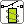
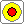

Lamp
LampOutput components show the result of the circuit. They have one or more inputs on the left, to which you connect the wires from the processing part.
LampLights as long as the input is on.

RelayA relay is a switch operated by an electromagnet. On the left is input R to the coil, on the right the changeover contact with the terminals R1 (top) and R2 (bottom).
The relay shows how a small control signal switches a contact. R1 and R2 are only labels on the symbol: you cannot connect a wire to them.

BuzzerSounds as long as the input is on. Handy as an alarm.
The display has one input. What it shows depends on what you connect to it:
A voltmeter with two measuring inputs: + on the left and − on the right. The window shows 5 V when there is a signal on both inputs (both on), and 0 V otherwise.
The meter also has an output: it is on when the meter reads 5 V, so you can pass the result on to a next component.